红外遥控的学习 [返回首页]
概要：
软解码：
解码过程由CPU完成，要消耗CPU资源。速度相对慢。可使硬件简单化。
硬解码：
解码过程由硬件完成，不占用CPU资源。速度相对快。硬件架构极其复杂。
NEC协议 [返回顶部]
NEC协议特征：
a. 8位地址码，8位命令码
b. 完整发射两次地址码和命令码，以提高可靠性
c. 脉冲时间长短调制方式
d. 38KHz载波频率 （455/12KHz）
e. 位时间1.12ms或2.25ms
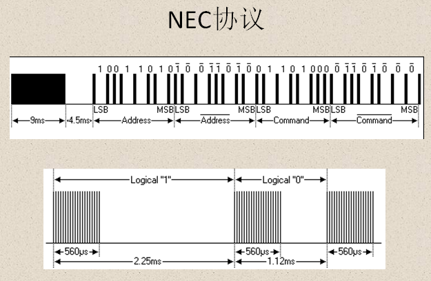
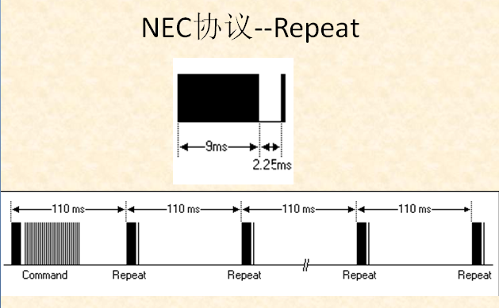
拓展 [返回顶部]
1.地址位和数据位都是8bit，为什么要发送32bit？
德玛：鬼知道！你去问鬼吧，哈哈哈！
盲僧：这你就不知道了吧，是这样的：为了提高红外发射和接受的抗干扰能力，
NEC协议要求在发送地址码和数据码后跟上地址码和数据码的反码，用
于接受端校正数据用。
2.为什么遥控器要用38KHz的载波信号？
战争女神：平时都是拿钱办事，从不问为什么。就是这样。
无双剑姬：简单说就是为了抗干扰，红外遥控常用的载波频率为38kHz，这是由
发射端所使用的455kHz晶振来决定的，在发射端要对晶振进行整数分
频，分频系数一般取12，所以455kHz÷12≈37.9kHz ≈38kHz。也有一
些遥控系统采用36kHz、40kHz、56kHz等， 一般由发射端晶振的振荡
频率来决定。所谓抗干扰就是遥控器的中心频率要与接收头所用的频
率一致，这样才能达到最好的接收效果。
3.为什么有的按键比如（Menu）就只能接受一次，二而Volume按键一直按着可以一直响应？
无极剑圣：无形的意志可以击穿顽石
德邦总管：从代码中的IR中断服务函数和码值处理函数可以看出，所有的Repeat码值都
传到了上层，并没有做特殊处理。但是为什么呢？只有一种可能，就是上层
做了特殊处理。经过苦苦的搜索发现，在MAPP_IR.C中
（如下图）
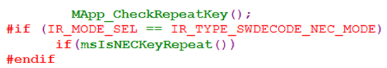
红外接收头 [返回顶部]
红外接受头的特性：
红外线接收头要有滤光片，将白光滤除。在以下环境条件下红外接收头会影响接收，甚至很严重:
1、强光直射红外接收头,导致光敏管饱和,白光中红外成分也很强。
2、有强的红外热源。
3、有频闪的光源，比如日光灯。
4、强的电磁干扰，比如日光灯启动、马达启动等
代码的软解码 [返回顶部]
代码如何来软解码？
既然接收头出来的信号是方波；是方波就会有高低电平，有高低电平就必然有电平的跳变。那么
就
可以用外部中断来捕获电平跳变持续的时间，然后根据NEC协议，判“0”，判“1”，再通过变量的移
位操作来保存二进制码，从而实现软解码的目的。
以下为一些代码的实现截图。
1.中断触发方式的设定
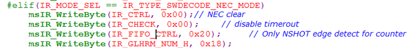
2.函数体
IR中断服务函数： static void MDrv_IR_SW_Isr(MHAL_SavedRegisters *pHalReg, U32 u32Data)
码值处理函数：BOOLEAN msIR_GetIRKeyCode(U8 *pkey, U8 *pu8flag)
3.中断服务函数：
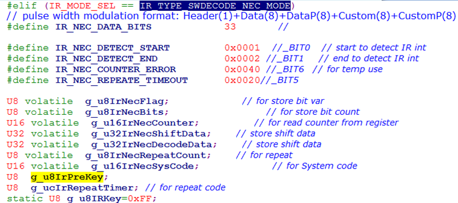
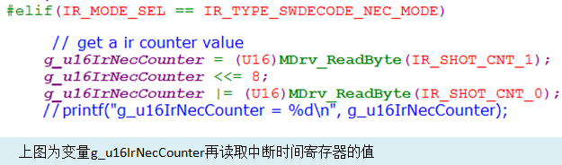
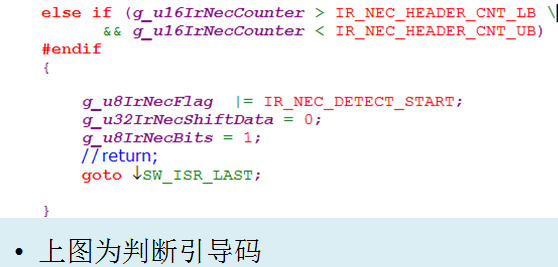
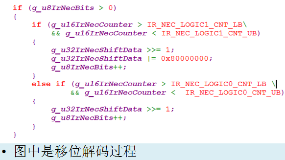
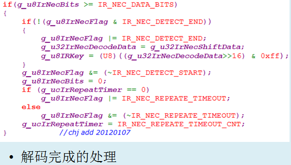
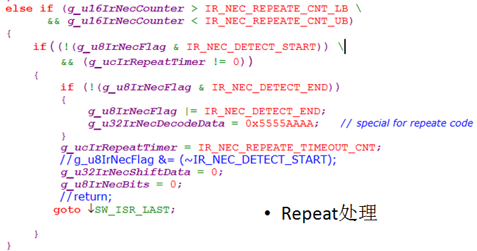
4.码值处理
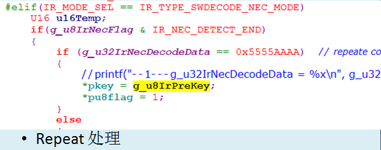
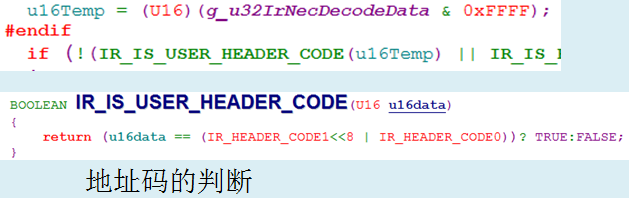
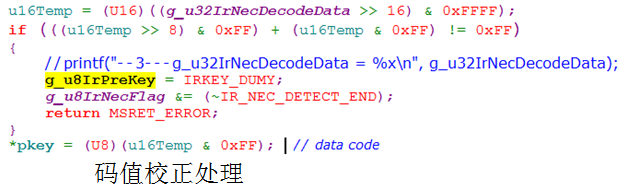
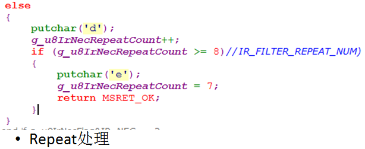
实际的操作 [返回顶部]
1.个人抓去的NEC遥控器波形图：
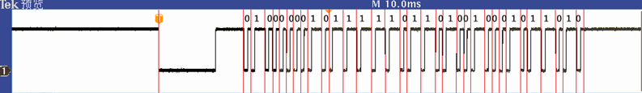
移位操作后：1011 0100 0100 1011 0111 1101 0000 0010
B 4 4 B 7 D 0 2
2.遥控器 Repeat 波形：
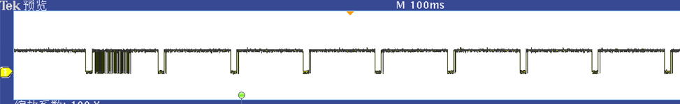
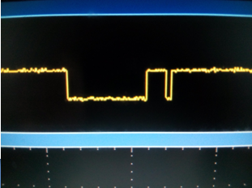
感谢查阅 [返回顶部]